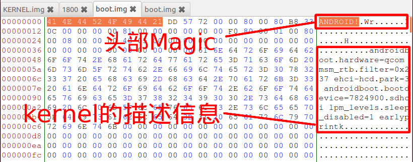
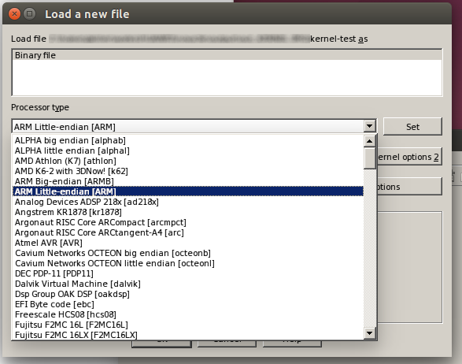
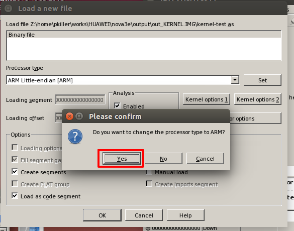
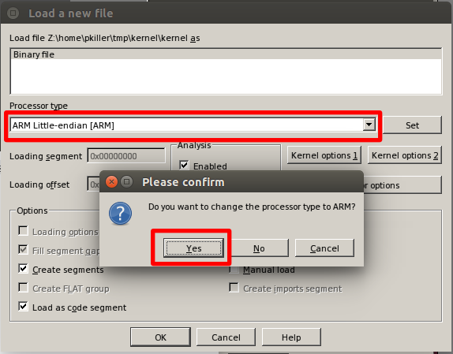
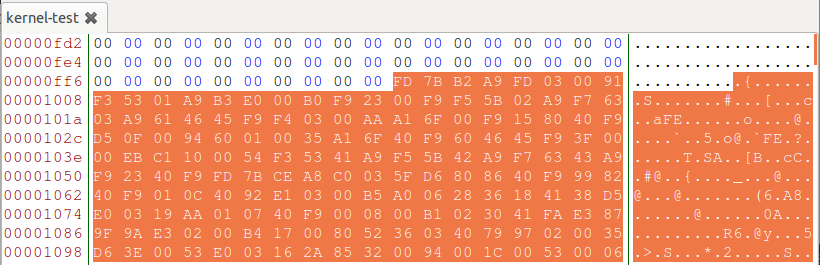
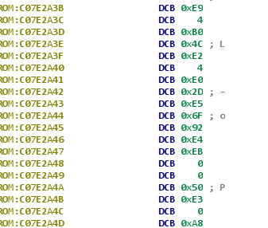

kernel逆向分析准备工作
13/May 2018
步骤1、提取内核文件
提取内核有两种方式：
- 通过固件包提取，通常包含在
KERNEL.img或boot.img之中。 - 通过root权限的手机提取。
A. 通过root权限设备提取
以Nexus 5为例子
1. 得到boot分区路径
adb shell
su
cd /dev/block/platform/msm_sdcc.1/by-name
ls -l boot

boot 是个系统符号软链接，/dev/block/mmcblk0p19 就是boot分区.
2. 拷贝boot分区数据到sdcard 用 dd 将其dump到sdcard文件夹下：
dd if=/dev/block/mmcblk0p19 of=/sdcard/boot.img
得到boot.img文件!
B. 通过固件包提取
1. 解开固件包 具体打包方法各厂商都不同，有些厂商还有加密。（如：OPPO)
2. 得到boot.img
解包后可直接得到boot.img。大部分手机的固件都为boot.img，少数会有其他名称(如华为EMUI: KERNEL.img)
X. 从boot.img / KERNEL.img中提取kernel
可以借助工具，工具有： 《binwalk》《mkboot》《unpackbootimg》
binwalk -e boot.img
mkboot KERNEL.img ./output/ # 实际测试有些问题，提取出的kernel.gz不完整
也可直接根据特征提有，粗略特征为：
1. 定位boot.img / KERNEL.img 中KERNEL的部分：
搜索字符串ANDROID!先定位到头部，头部后紧跟kernel的描述信息：

2. 提出kernel.gz包文件：
接着以此为起点寻找”1F 8B 08 00”，即gzip的头部Magic。长度不管（直接从此处到文件尾)保存到新的文件如：kernel.gz。

3. 解压出kernel.gz中的真正raw文件：
然后用gzip命令解压出文件(用图形界面解压会报错)：
gzip -d kernel.gz
步骤2、用IDA加载
ARM64的内核
使用IDA64打开kernel文件，选择ARM Little-endian [ARM]:


通常都在ARM64中，将kernel文件偏移0x1000加载到内存的0xffffffc000080000处：

ARMv7的内核


步骤3. 为IDA中的内核增加符号支持
以下脚本通过cat /proc/kallsyms的输出结果来对IDA中的内核函数sub_xxx进行重命名:
(由于某个早期版本Android已经不再输出内核符号偏移地址全部以0填充，所以使用该方法前 需要修改kernel使其输出偏移地址。)
// 使用一下IDA脚本(python)，将函数/符号名设到对应的sub_xxx上
ksyms = open("syms.txt")
i = 0
for line in ksyms:
i += 1
addr = int(line[0:8],16)
name = line[11:-1]
idaapi.set_debug_name(addr,name)
MakeNameEx(addr,name,SN_NOWARN)
add_func(addr)
if i % 100 == 0:
Message("cur: %d\n" % i)
# Message("%08X:%sn"%(addr,name))
注意事项
kernel加载地址的寻找：
以上的kernel加载地址0xffffffc000080000只是比较普遍的情况，如果以上地址不能正确分析，也有两个方法：
可利用
cat /proc/kallsyms输出的符号与IDA中的函数进行结合分析，尝试推算出加载地址。通过代码中对字符串的引用来推算出加载地址。
通过内核源文件：boot/boardconfig.h中宏配置寻找内核加载地址。
文件偏移的寻找 开头处寻找不为00的数据：

加载后，默认为DCB数据，可以用一下脚本自动刷成代码：

#! python
def main():
start = AskAddr(MinEA(), "欲转为Code的起始地址：")
end = AskAddr(MinEA(), "欲转为Code的结束地址：")
if start >= end:
print('输入的区间不正确～')
return
for cur_addr in range(start, end, 4):
flags = GetFlags(cur_addr)
print("[MSG] 0x%X 's flags: %x" % (cur_addr, flags))
if Byte(cur_addr) and not (isCode(flags) and isTail(flags) and isUnknown(flags) and isHead(flags)):
print('[MSG] 0x%X is Data, Make to code.' % cur_addr)
MakeCode(cur_addr)
main()
参考资料
http://blog.csdn.net/qq1084283172/article/details/57074695
http://www.hhjack.com/arm64_zimage_reverseengineering_with_ida_pro/
https://www.cnx-software.com/2015/12/07/how-to-extract-kernel-img-with-mkboot-script/